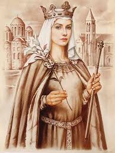
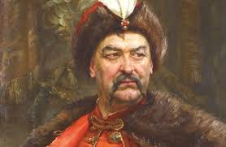
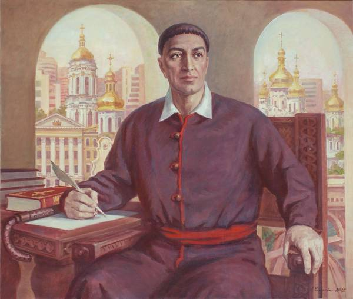

Гетьман Війська Запорозького, борець за незалежність українського народу, засновник першої в історії української держави — Гетьманщини. Богдан Хмельницький, який при народженні мав ім'я Зіновій, був дуже освіченою людиною: знав латинську, французьку та турецьку мови. Попри те, що освіту Хмельницький здобув у єзуїтському навчальному закладі, майбутній гетьман залишався вірним православ'ю. Богдан Хмельницький прославився як талановитий полководець, видатний реформатор і засновник української державності. Роки правління легендарного гетьмана (1648-1657) принесли Україні не лише внутрішньополітичну міць, а й визнання на міжнародній арені.
Українці, які змінили світ
Бути українцем сьогодні — це рухатися вперед, бути активним і цілеспрямованим, прагнути відбудовувати і боронити
рідну країну, вивчати українську мову і бажати нею розмовляти, мати інтерес до культурної спадщини України,
її історії та традицій. А ще — остаточно позбуватися комплексу меншовартості, адже Україна, яка насправді
ніколи і не була на світовому узбіччі, подарувала людству не одне відоме ім'я.
Наші співвітчизники
впливають на хід історії, роблять наукові відкриття, створюють літературні і художні шедеври, підкорюють
світ музики і телебачення, космічні простори і спортивні висоти.
Розповідаємо про них співвітчизникам та всім, хто цікавиться Україною за кордоном:
Анна Ярославна (Анна Київська)
Українська княгиня, королева Франції (народилася близько 1032 року)
Українська княгиня, дочка Великого князя київського Ярослава Мудрого, одна з найвидатніших жінок середньовіччя, що прославила Україну на всю Європу. Освічена і розумна Анна, яка вільно володіла 5 мовами, стала не просто черговою дружиною французького короля Генріха I і матір'ю майбутнього короля Філіпа I, а й помітною політичною фігурою тих часів. Королева Анна мала вплив на зовнішню і внутрішню політику Франції, входила до складу королівської ради, опікувалася церквами і монастирями, була єдиною жінкою, котра вела переписку з Папою Римським Миколаєм ІІ. В історії Європи Анна Ярославна залишилася і як прабабця майже 30 французьких королів.
Богдан Хмельницький
Гетьман (1595 — 1657)
Григорій Сковорода
Філософ (1722 — 1794)
Григорій Сковорода — видатний український філософ, богослов, поет, педагог і перекладач був чи не найцікавішою постаттю історії українського духу. Надзвичайно цінував особисту фізичну і духовну свободу, не вклонявся навіть цариці. Свої філософські трактати присвячував переважно етиці, а головним сенсом людського існування вважав самопізнання. Містик-мандрівник все життя був незалежним і вільним, кажуть, умів передбачати долю і знав точну дату своєї смерті. "Світ ловив мене, та не спіймав…" — такі слова викарбувані на могилі "українського Сократа".
Тарас Шевченко
Поет, прозаїк, художник (1814 — 1861)

Національна гордість Тарас Григорович Шевченко був людиною універсальних талантів і інтересів. Колишній кріпак ще при житті став визнаним поетом, прозаїком, драматургом, художником, політичним і громадським діячем. Але більше за все Шевченко мріяв про ті часи, коли його країна буде незалежною суверенною державою, коли в Україні шануватимуться мова, культура та історія, а народ буде єдиним у своїх вчинках і помислах. "Свою Україну любіть. Любіть її… Во врем'я люте. В останню тяжкую минуту За неї Господа моліть". Сьогодні Шевченко — один із найвидаваніших авторів у світі, вірші поета перекладені більш ніж ста мовами світу і навіть мовою есперанто. Один із 300 кратерів Меркурія отримав ім'я Тараса Григоровича, а на Землі у 35 країнах височіють майже 1400 пам'ятників українському генію.